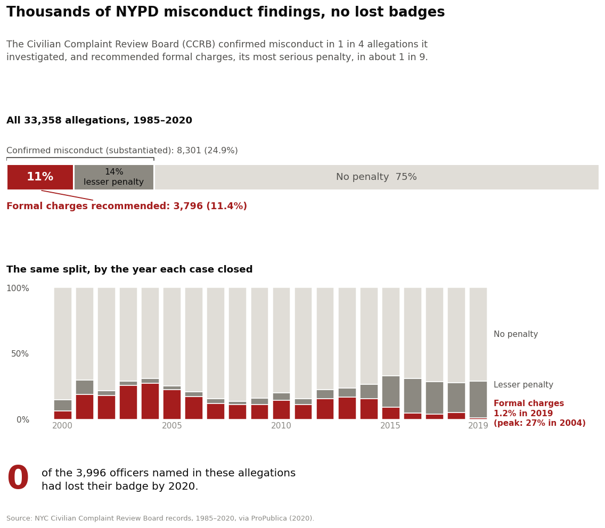
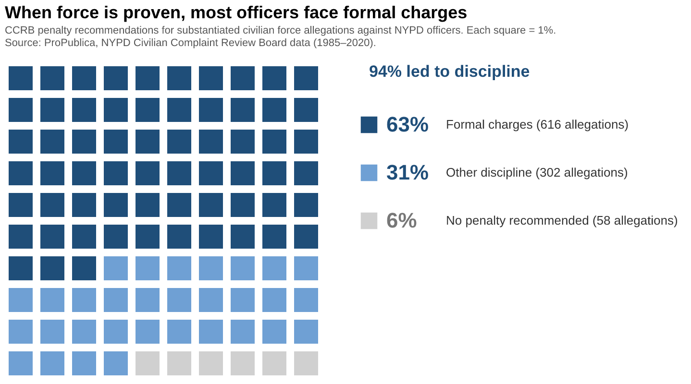

Proposition: NYPD officers are not held liable for civilian allegations of misconduct.
Data: New York City Civilian Complaint Review Board (CCRB) records of 33,358 allegations against 3,996 NYPD officers, 1985–2020, released by ProPublica in July 2020. The release includes only officers still on the force in June 2020 who had at least one substantiated allegation. Design decisions are scored from −2 (fully deceptive) to +2 (fully earnest).
FOR the Proposition

Design Decisions and Rationale:
- “0 of 3,996 officers had lost their badge by 2020” (−2). The dataset only includes officers still on the force in 2020, so this number has to be zero. It isn’t a finding. “Lost their badge” implies removal as a penalty, and the large red number makes it read as the chart’s conclusion. We considered a smaller callout but kept the large red number because it anchors the eye first.
- Unexplained drop in formal charges (−1). Charges fell from 27% (2004) to 1.2% (2019), but mostly because the CCRB added new mid-level penalties in 2014–15. We show the drop without saying why, so it looks like accountability disappeared.
- Data transformations (−0.5). We collapsed the 11 dispositions into three outcomes, calculated each outcome’s share per year closed (2000–2019, since earlier years are sparse and 2020 is partial), and counted unique officers. Counting allegations rather than complaints gives the lower rate (25% vs. 32%).
- Part-to-whole encoding on a full 0–100% scale (+1). Both panels use the same three colors and sum to 100%, which is honest and makes the red look small. We widened the two grays to about 31 L* apart, checked the colors for colorblindness, and labeled every segment directly. A truncated axis would have exaggerated the gap, but it would also have been easy to catch.
- Plain labels, slanted headline (−0.5). We spelled out CCRB and used “confirmed misconduct” for “substantiated.” “No penalty” merges unproven cases with conduct ruled within NYPD rules. The subtitle leaves out that the board only recommends penalties, and the headline is slanted but restrained.
AGAINST the Proposition

Design Decisions and Rationale:
- Only considering substantiated allegations (−1.5). The graph only reflects the 976 substantiated force allegations, so 63% formal charges appears high. These make up only 13% of all 7,636 force allegations, and that denominator is invisible to the reader.
- Presenting recommendations as results (−1). The chart shows CCRB recommendations, but the final decision belongs to the NYPD Police Commissioner, who can reduce the punishment or dismiss it altogether.
- Counting training as “discipline” (−1). “Other discipline” combines command discipline with formalized training and instructions. That makes the “94% led to discipline” statement sound valid, even though training may not be considered a punishment at all.
- Waffle chart with figures (+1). Each square equals 1%, which makes the chart easy to read, and every percentage is paired with its allegation count, so the numbers themselves are not distorted.
- Headings and citation (+1.5). The subtitle states that the chart shows “penalty recommendations” for “substantiated” allegations and cites the source, although it is set in small gray type that is easy to skip.
Final Reflection
Both visualizations start from the same ProPublica release of CCRB records. The data needed little cleaning for our purposes: the fields we relied on (allegation category, board disposition, year closed and officer ID) have no missing values, so most of the work was transformation. For Figure 2 we filtered to the 7,636 force allegations and then to the 976 that were substantiated, grouped the recommendations into formal charges, other discipline and no penalty, and rounded each share to whole squares. We used matplotlib for vis 2. For Figure 1, most of the work happened before any chart was drawn: we collapsed the CCRB’s 11 disposition codes into three outcomes a general reader could follow, computed each outcome’s share by the year each case closed, and counted unique officers for the callout. We built both of its panels in matplotlib in a Jupyter notebook. The encodings were the easy part, since a full 0–100% part-to-whole chart is simple to build and hard to criticize. The harder parts were getting matplotlib’s defaults to look clean (direct labels, aligned panels, and a palette checked for colorblindness) and, above all, making the deception subtle enough to survive a second look.
What surprised us most was how much the story depended on choosing the denominator. The same dataset let us honestly report that 94% of substantiated force allegations led to a disciplinary recommendation, and that only 8% of all force allegations ended in a recommendation of formal charges. We were also surprised that our most deceptive elements were accurate. Formal charges really did fall from 27% of allegations in 2004 to 1.2% in 2019, but mostly because the CCRB added new mid-level penalties in 2014–15, which is visible in the growing gray band, not because accountability disappeared. “0 of 3,996 officers had lost their badge” is literally true, but the dataset only includes officers still serving in 2020, so it could never have been anything else. We had expected deception to come from distorted visuals. Instead, it came almost entirely from what we left unsaid.
We now define ethical analysis and visualization as an accurate presentation of data, with its limitations clearly disclosed and its interpretations supported by evidence. Directing attention toward a supported finding, like the dark blue squares in Figure 2, is acceptable because it uses visual channels to highlight existing data without removing or shrinking anything else. It becomes misleading when it persuades viewers to reach conclusions the data cannot establish. Likewise, analysis often requires filtering or focusing on a subgroup of the data, and transparency is what separates an acceptable choice from a misleading one. In Figure 2, the percentages do not describe the whole dataset, only the recommendations made for substantiated allegations. No mathematical errors or fabricated data are involved, but the chart is still misleading if the reader does not know the denominator. Stating that restriction plainly in the subtitle, rather than in small gray type, is the acceptable course of action.